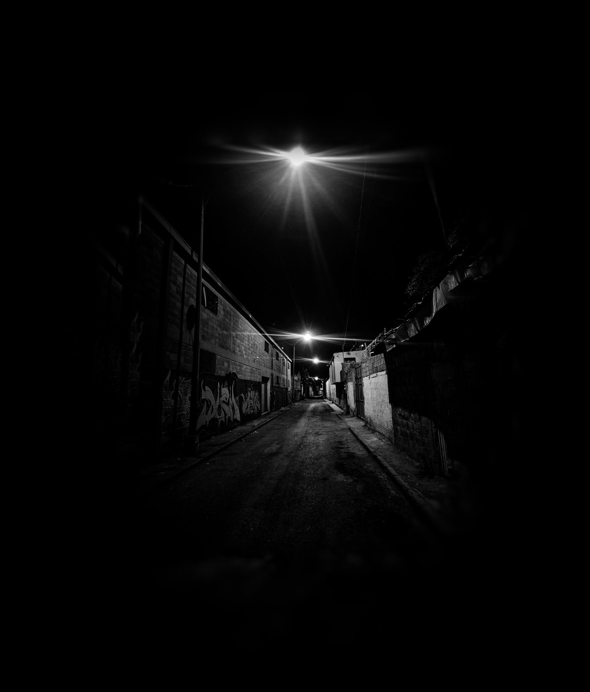
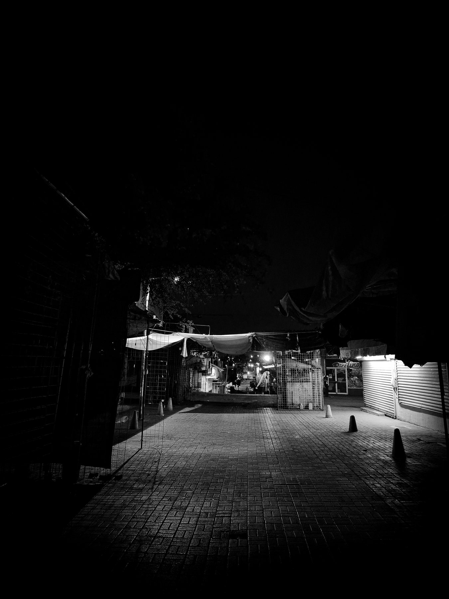
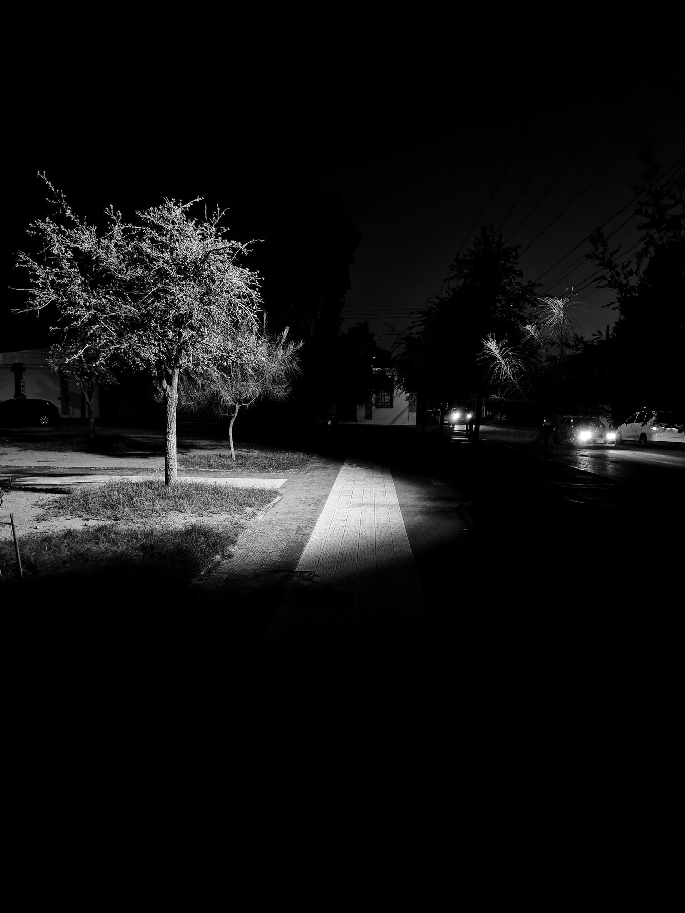
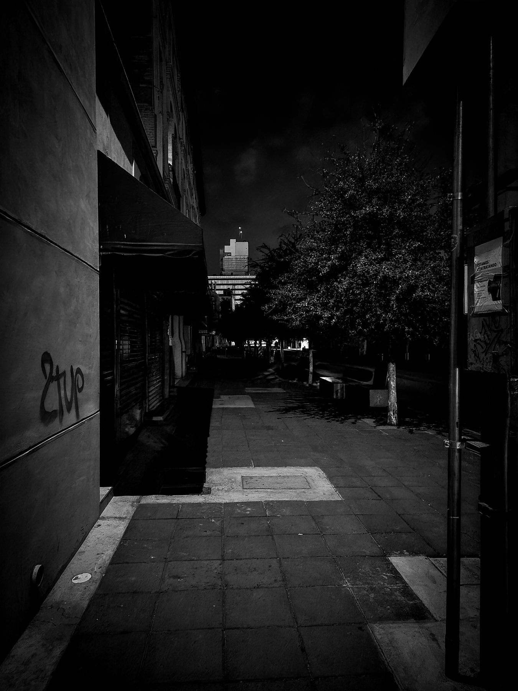
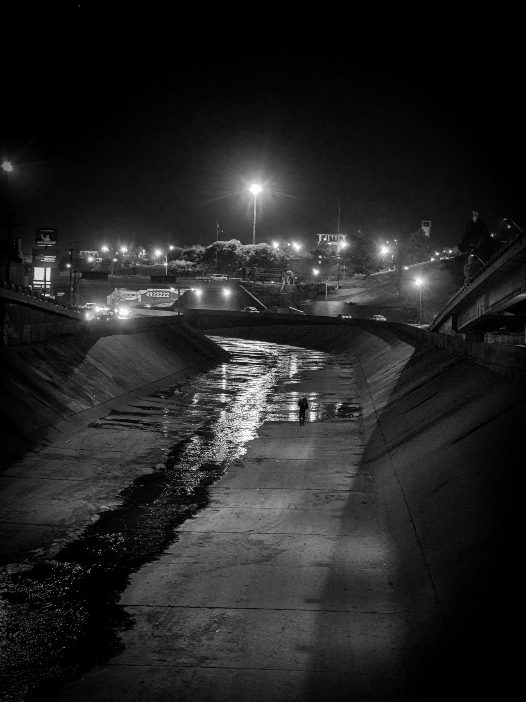

Fotografía · 2026
Caminante
Serie fotográfica en blanco y negro · cinco imágenes
- Contexto
- Fotografía Digital, UVM
- Fecha
- mayo de 2026
- Mi rol
- Fotografía, edición y narrativa de la serie
- Herramientas
- Cámara de celular, Adobe Lightroom

El reto
Mostrar la ciudad de noche desde su lado más solitario, con la mirada de un caminante que sale de su trabajo y vuelve a casa, y hacer que el espectador se detenga en lo que normalmente pasa de largo.
Proceso
Las cinco imágenes se editaron en Lightroom con el mismo proceso para que la serie se sintiera unificada. Usé el perfil monocromo en lugar de solo bajar la saturación, porque activa el mezclador de blanco y negro y me deja decidir qué color del original se oscurece o se aclara.
En varias bajé los naranjas y amarillos para hundir las luces de la calle y darle más peso a las sombras, con contraste alto y viñeta suave.
Resultado
Me costó dejar fuera tomas que me gustaban, pero entendí que no hace falta contarlo todo si hay coherencia.



